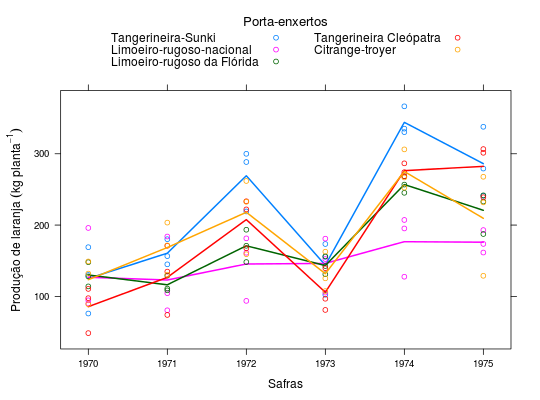

Dados de produção de laranja de um ensaio de competição de porta-enxertos para laranjeira Valência realizado na Estação Experimental de Limeira, em delineamento de blocos casualizados.
Um data.frame com 90 observações e 4 variáveis, em que
anospenxblocprodBARBIN (2013), pág. 167.
library(latticeExtra) data(BarbinPg167)#> Warning: data set ‘BarbinPg167’ not foundstr(BarbinPg167)#> 'data.frame': 90 obs. of 4 variables: #> $ anos: int 1970 1971 1972 1973 1974 1975 1970 1971 1972 1973 ... #> $ penx: Factor w/ 5 levels "Tangerineira-Sunki",..: 1 1 1 1 1 1 2 2 2 2 ... #> $ bloc: Factor w/ 3 levels "I","II","III": 1 1 1 1 1 1 1 1 1 1 ... #> $ prod: num 169 145 288 156 330 ...xyplot(prod ~ anos, data = BarbinPg167, groups = penx, type = c("p", "a"), lwd = 2, auto.key = list(columns = 2, title = "Porta-enxertos", cex.title = 1.1), as.table = TRUE, xlab = "Safras", ylab = expression("Produção de laranja"~(kg~planta^{-1})))layer(panel.xyplot(groups = with(BarbinPg167, interaction(bloc, penx)), type = "a", lty = 2, lwd = 1, col = "gray50", ...))#> Error in layer(panel.xyplot(groups = with(BarbinPg167, interaction(bloc, penx)), type = "a", lty = 2, lwd = 1, col = "gray50", ...)): '...' used in an incorrect context